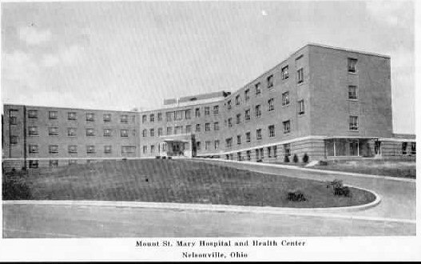

Doctor's Hospital Nelsonville

The Doctor's Hospital in Nelsonville is said to be haunted by one or more of the nuns who worked there until the 1970s. They are seen walking down the halls from a distance, but if you approach them they're nowhere to be found. They date from a time when the hospital was known as Mount Saint Mary's, the name it opened with in 1950.
Incidentally, this is the hospital where Sarah Jessica Parker (Sex and the City, LA Story) was born, March 25, 1965.
Back